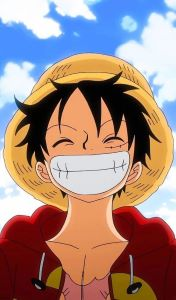
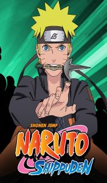
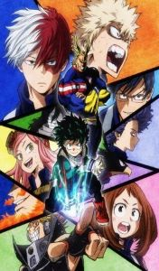
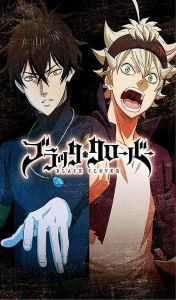
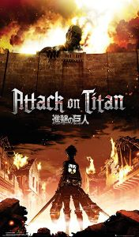
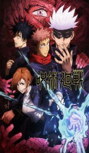

One Piece
Luffy quiere ser el Rey de los piratas, el hombre mas fuerte y libre de todo el mundo.
Para ello debera encontrar el One Piece y derrotar a todos los otros piratas junto con sus nakamas.

Naruto Shippuden
Han pasado años desde que Sasuke se fue, en los cuales Naruto ha estado entrenando duro con Jiraiya. Podrá Naruto
cumplir su sueño de ser Hokage y recuperar a Sasuke?

Boku No Hero Academia
Midoriya es un gran fan de All Might y espera convertirse en un gran héroe como él, el único problema es que nació
sin poderes!

Black Clover
El Reino del Trebol, defendido por el Rey Mago y los Caballeros Mágicos, poderosos hechiceros que darian su vida por el
reino. En un mundo dominado por la magia nace Asta, un huerfano sin magia. Podrá Asta conseguir su sueño de ser Rey Mago
a pesar de su falta de magia?

Shingeki No Kyojin
La humanidad vive encerrada dentro de muros para protegerse de los titanes, monstruos gigantes que devoran humanos sin
piedad. La legión de reconocimiento son un escuadron que se encargan de explorar el mundo fuera de las murallas.

Jujutsu Kaisen
Yuji se ve obligado a comer un dedo del demonio mas poderoso, el cual le da un gran poder pero tambien lo maldice. El demonio
dentro de Yuji intentara dominarlo al mismo tiempo que combate a otros espiritus y demonios fuertes como un hechicero.